分布式调度XXL-JOB
1.概述
1.1什么是任务调度
类比下面业务场景的解决方案:
- 某电商平台需要每天上午10点，下午3点，晚上8点发放一批优惠券
- 某银行系统需要在信用卡到期还款日的前三天进行短信提醒
- 某财务系统需要在每天凌晨0:10分结算前一天的财务数据，统计汇总
以上场景就是任务调度所需要解决的问题
任务调度是为了自动完成特定任务，在约定的特定时刻去执行任务的过程
1.2 为什么需要分布式调度
使用Spring中提供的注解@Scheduled，也能实现调度的功能
在业务类中方法中贴上这个注解,然后在启动类上贴上@EnableScheduling注解
@Scheduled(cron = "0/20 * * * * ? ")
public void doWork(){
//doSomething
}感觉Spring给我们提供的这个注解可以完成任务调度的功能，好像已经完美解决问题了，为什么还需要分布式呢?
主要有如下这几点原因:
高可用：单机版的定式任务调度只能在一台机器上运行，如果程序或者系统出现异常就会导致功能不可用。
防止重复执行: 在单机模式下，定时任务是没什么问题的。但当我们部署了多台服务，同时又每台服务又有定时任务时，若不进行合理的控制：在同一时间，只有一个定时任务启动执行，这时，定时执行的结果就可能存在混乱和错误了
- 多个服务都执行定时任务，本来执行一次，积分+1就行了，如果有三个服务中的定时任务都执行了1次+1，积分就+1+1+1，总积分变成了+3
单机处理极限：原本1分钟内需要处理1万个订单，但是现在需要1分钟内处理10万个订单；原来一个统计需要1小时，现在业务方需要10分钟就统计出来。你也许会说，你也可以多线程、单机多进程处理。的确，多线程并行处理可以提高单位时间的处理效率，但是单机能力毕竟有限（主要是CPU、内存和磁盘），始终会有单机处理不过来的情况。
1.3 XXL-JOB介绍
XXL-Job：是大众点评的分布式任务调度平台，是一个轻量级分布式任务调度平台, 其核心设计目标是开发迅速、学习简单、轻量级、易扩展
大众点评目前已接入XXL-JOB，该系统在内部已调度约100万次，表现优异。
目前已有多家公司接入xxl-job，包括比较知名的大众点评，京东，优信二手车，360金融 (360)，联想集团 (联想)，易信 (网易)等等
官网地址 https://www.xuxueli.com/xxl-job/
系统架构图

设计思想
将调度行为抽象形成 “调度中心” 公共平台，而平台自身并不承担业务逻辑，“调度中心”负责发起调度请求。
将任务抽象成分散的JobHandler，交由 “执行器” 统一管理，“执行器”负责接收调度请求并执行对应的JobHandler中业务逻辑。
因此，“调度”和“任务”两部分可以相互解耦，提高系统整体稳定性和扩展性
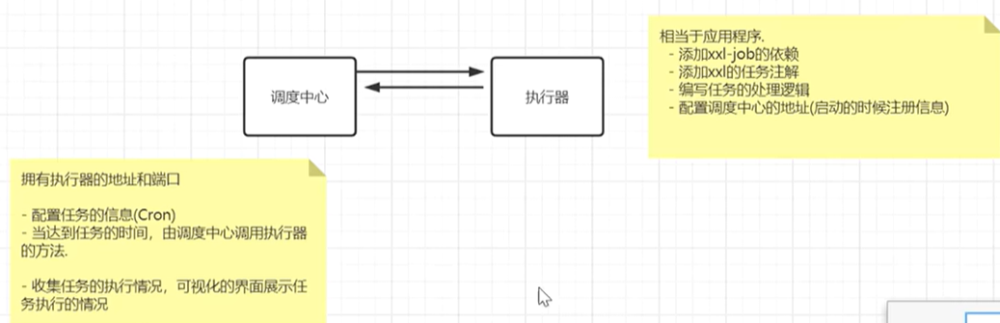
2.快速入门
2.1 下载源码
源码下载地址:
https://github.com/xuxueli/xxl-job
https://gitee.com/xuxueli0323/xxl-job
2.1 初始化调度数据库
请下载项目源码并解压，获取 “调度数据库初始化SQL脚本” 并执行即可。
“调度数据库初始化SQL脚本” 位置为:
/xxl-job/doc/db/tables_xxl_job.sql2.2 编译源码
解压源码,按照maven格式将源码导入IDE, 使用maven进行编译即可，源码结构如下：
xxl-job-admin为调度中心
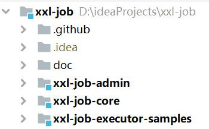
2.3 配置部署调度中心
2.3.1 调度中心配置
修改xxl-job-admin项目的配置文件application.properties,把数据库账号密码配置上
### web
server.port=8080
server.servlet.context-path=/xxl-job-admin
### actuator
management.server.servlet.context-path=/actuator
management.health.mail.enabled=false
### resources
spring.mvc.servlet.load-on-startup=0
spring.mvc.static-path-pattern=/static/**
spring.resources.static-locations=classpath:/static/
### freemarker
spring.freemarker.templateLoaderPath=classpath:/templates/
spring.freemarker.suffix=.ftl
spring.freemarker.charset=UTF-8
spring.freemarker.request-context-attribute=request
spring.freemarker.settings.number_format=0.##########
### mybatis
mybatis.mapper-locations=classpath:/mybatis-mapper/*Mapper.xml
#mybatis.type-aliases-package=com.xxl.job.admin.core.model
### xxl-job, datasource
spring.datasource.url=jdbc:mysql://192.168.202.200:3306/xxl_job?useUnicode=true&characterEncoding=UTF-8&autoReconnect=true&serverTimezone=Asia/Shanghai
spring.datasource.username=root
spring.datasource.password=WolfCode_2017
spring.datasource.driver-class-name=com.mysql.cj.jdbc.Driver
### datasource-pool
spring.datasource.type=com.zaxxer.hikari.HikariDataSource
spring.datasource.hikari.minimum-idle=10
spring.datasource.hikari.maximum-pool-size=30
spring.datasource.hikari.auto-commit=true
spring.datasource.hikari.idle-timeout=30000
spring.datasource.hikari.pool-name=HikariCP
spring.datasource.hikari.max-lifetime=900000
spring.datasource.hikari.connection-timeout=10000
spring.datasource.hikari.connection-test-query=SELECT 1
spring.datasource.hikari.validation-timeout=1000
### xxl-job, email
# 失败发送信息给邮箱
spring.mail.host=smtp.qq.com
spring.mail.port=25
spring.mail.username=xxx@qq.com
spring.mail.from=xxx@qq.com
spring.mail.password=xxx
spring.mail.properties.mail.smtp.auth=true
spring.mail.properties.mail.smtp.starttls.enable=true
spring.mail.properties.mail.smtp.starttls.required=true
spring.mail.properties.mail.smtp.socketFactory.class=javax.net.ssl.SSLSocketFactory
### xxl-job, access token
#执行器连到调度中心要使用相同的token
xxl.job.accessToken=default_token
### xxl-job, i18n (default is zh_CN, and you can choose "zh_CN", "zh_TC" and "en")
xxl.job.i18n=zh_CN
## xxl-job, triggerpool max size
xxl.job.triggerpool.fast.max=200
xxl.job.triggerpool.slow.max=100
### xxl-job, log retention days
xxl.job.logretentiondays=302.3.2 部署项目
运行XxlJobAdminApplication程序即可.
调度中心访问地址: http://localhost:8080/xxl-job-admin
默认登录账号 “admin/123456”, 登录后运行界面如下图所示。
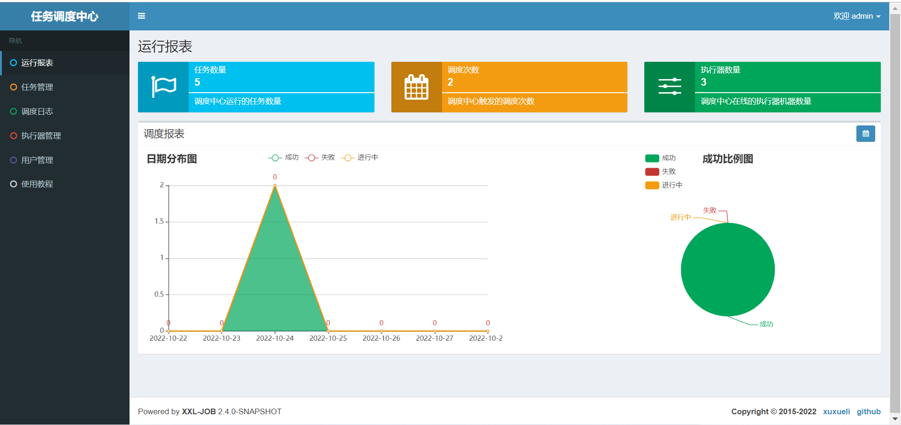
至此“调度中心”项目已经部署成功。
2.4 配置部署执行器项目
2.4.1 添加Maven依赖
创建SpringBoot项目并且添加如下依赖:
<dependency>
<groupId>com.xuxueli</groupId>
<artifactId>xxl-job-core</artifactId>
<version>2.3.1</version>
</dependency>2.4.2 执行器配置
在配置文件中添加如下配置:
### 调度中心部署根地址 [选填]：如调度中心集群部署存在多个地址则用逗号分隔。执行器将会使用该地址进行"执行器心跳注册"和"任务结果回调"；为空则关闭自动注册；
xxl.job.admin.addresses=http://127.0.0.1:8080/xxl-job-admin
### 执行器通讯TOKEN [选填]：非空时启用；
xxl.job.accessToken=default_token
### 执行器AppName [选填]：执行器心跳注册分组依据；为空则关闭自动注册
xxl.job.executor.appname=xxl-job-executor-sample
### 执行器注册 [选填]：优先使用该配置作为注册地址，为空时使用内嵌服务 ”IP:PORT“ 作为注册地址。从而更灵活的支持容器类型执行器动态IP和动态映射端口问题。
xxl.job.executor.address=
### 执行器IP [选填]：默认为空表示自动获取IP，多网卡时可手动设置指定IP，该IP不会绑定Host仅作为通讯实用；地址信息用于 "执行器注册" 和 "调度中心请求并触发任务"；
xxl.job.executor.ip=127.0.0.1
### 执行器端口号 [选填]：小于等于0则自动获取；默认端口为9999，单机部署多个执行器时，注意要配置不同执行器端口；
xxl.job.executor.port=9999
### 执行器运行日志文件存储磁盘路径 [选填] ：需要对该路径拥有读写权限；为空则使用默认路径；
xxl.job.executor.logpath=/data/applogs/xxl-job/jobhandler
### 执行器日志文件保存天数 [选填] ： 过期日志自动清理, 限制值大于等于3时生效; 否则, 如-1, 关闭自动清理功能；
xxl.job.executor.logretentiondays=302.4.3 添加执行器配置
创建XxlJobConfig配置对象:
@Configuration
public class XxlJobConfig {
@Value("${xxl.job.admin.addresses}")
private String adminAddresses;
@Value("${xxl.job.accessToken}")
private String accessToken;
@Value("${xxl.job.executor.appname}")
private String appname;
@Value("${xxl.job.executor.address}")
private String address;
@Value("${xxl.job.executor.ip}")
private String ip;
@Value("${xxl.job.executor.port}")
private int port;
@Value("${xxl.job.executor.logpath}")
private String logPath;
@Value("${xxl.job.executor.logretentiondays}")
private int logRetentionDays;
@Bean
public XxlJobSpringExecutor xxlJobExecutor() {
XxlJobSpringExecutor xxlJobSpringExecutor = new XxlJobSpringExecutor();
xxlJobSpringExecutor.setAdminAddresses(adminAddresses);
xxlJobSpringExecutor.setAppname(appname);
xxlJobSpringExecutor.setAddress(address);
xxlJobSpringExecutor.setIp(ip);
xxlJobSpringExecutor.setPort(port);
xxlJobSpringExecutor.setAccessToken(accessToken);
xxlJobSpringExecutor.setLogPath(logPath);
xxlJobSpringExecutor.setLogRetentionDays(logRetentionDays);
return xxlJobSpringExecutor;
}
}2.4.4 添加任务处理类
添加任务处理类，交给Spring容器管理，在处理方法上贴上@XxlJob注解
@Component
public class SimpleXxlJob {
@XxlJob("demoJobHandler")
public void demoJobHandler() throws Exception {
System.out.println("执行定时任务,执行时间:"+new Date());
}
}2.5 运行HelloWorld程序
2.5.1 任务配置&触发执行
登录调度中心,在任务管理中新增任务,配置内容如下:
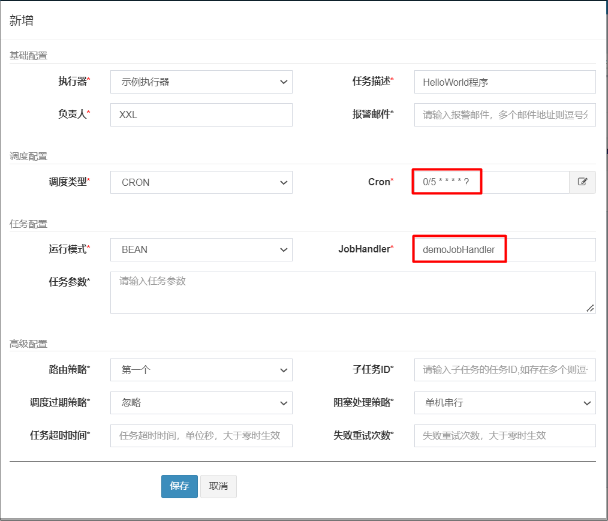
新增后界面如下:
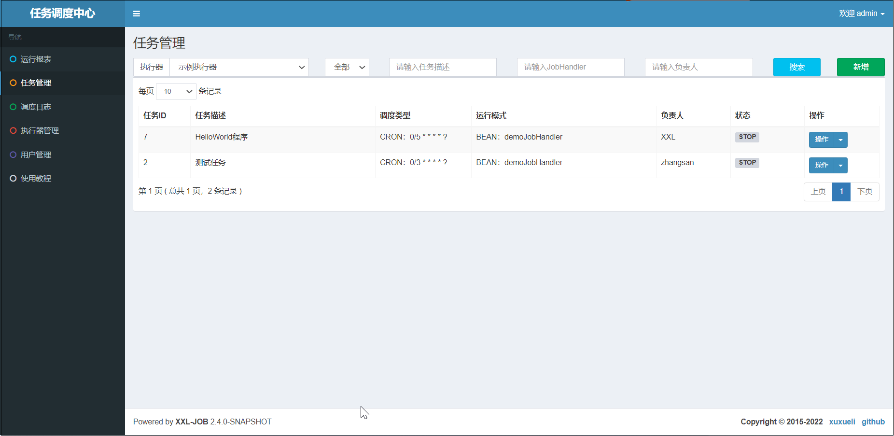
接着启动定时调度任务
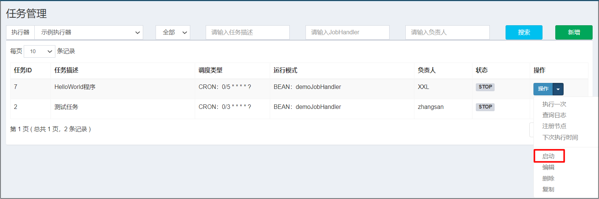
2.5.2 查看日志
在调度中心的调度日志中就可以看到，任务的执行结果.
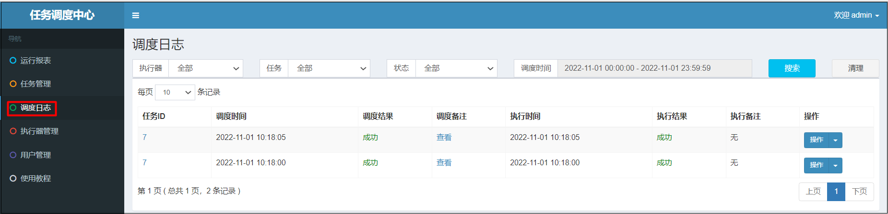
管控台也可以看到任务的执行信息.
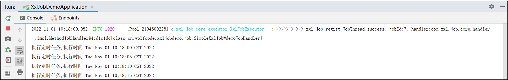
2.6 GLUE模式(Java)
任务以源码方式维护在调度中心，支持通过Web IDE在线更新，实时编译和生效，因此不需要指定JobHandler。
（ “GLUE模式(Java)” 运行模式的任务实际上是一段继承自IJobHandler的Java类代码，它在执行器项目中运行，可使用@Resource/@Autowire注入执行器里中的其他服务.
添加Service
@Service
public class HelloService {
public void methodA(){
System.out.println("执行MethodA的方法");
}
public void methodB(){
System.out.println("执行MethodB的方法");
}
}添加任务配置
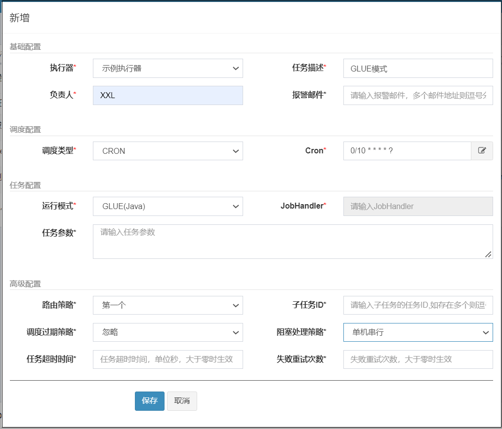
通过GLUE IDE在线编辑代码
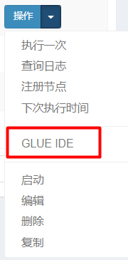
编写内容如下:
package com.xxl.job.service.handler;
import cn.wolfcode.xxljobdemo.service.HelloService;
import com.xxl.job.core.handler.IJobHandler;
import org.springframework.beans.factory.annotation.Autowired;
public class DemoGlueJobHandler extends IJobHandler {
@Autowired
private HelloService helloService;
@Override
public void execute() throws Exception {
helloService.methodA();
}
}启动并执行程序
2.6 执行器集群
2.6.1 集群环境搭建
在IDEA中设置SpringBoot项目运行开启多个集群
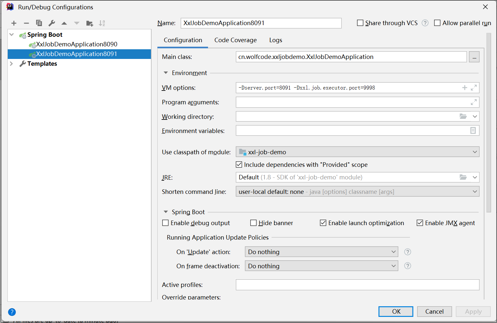
启动两个SpringBoot程序,需要修改Tomcat端口和执行器端口
Tomcat端口8090程序的命令行参数如下:
-Dserver.port=8090 -Dxxl.job.executor.port=9998Tomcat端口8090程序的命令行参数如下:
-Dserver.port=8091 -Dxxl.job.executor.port=9999
在任务管理中，修改路由策略，修改成轮询
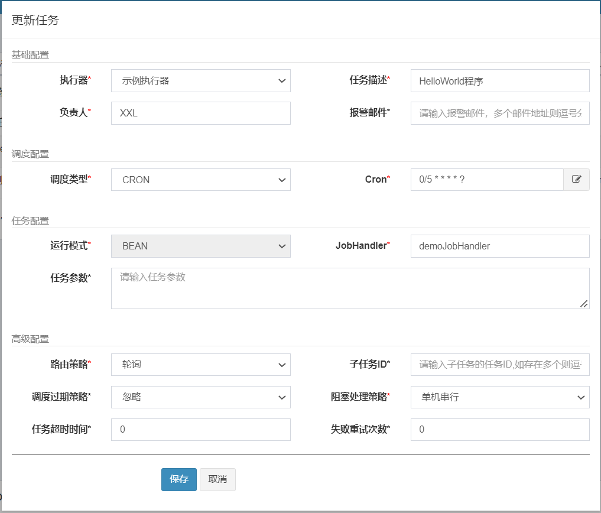
重新启动,我们可以看到效果是,定时任务会在这两台机器中进行轮询的执行
8090端口的控制台日志如下:
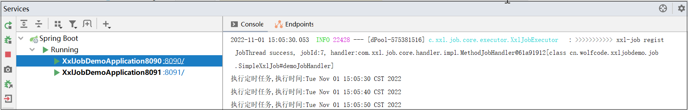
8091端口的控制台日志如下:
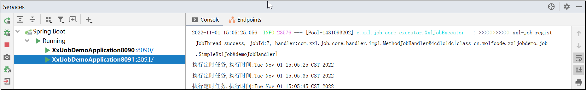
2.6.2 调度路由算法讲解
当执行器集群部署时，提供丰富的路由策略，包括:
FIRST（第一个）：固定选择第一个机器LAST（最后一个）：固定选择最后一个机器；ROUND（轮询）：依次的选择在线的机器发起调度RANDOM（随机）：随机选择在线的机器；CONSISTENT_HASH（一致性HASH）：每个任务按照Hash算法固定选择某一台机器，且所有任务均匀散列在不同机器上。LEAST_FREQUENTLY_USED（最不经常使用）：使用频率最低的机器优先被选举；LEAST_RECENTLY_USED（最近最久未使用）：最久未使用的机器优先被选举；FAILOVER（故障转移）：按照顺序依次进行心跳检测，第一个心跳检测成功的机器选定为目标执行器并发起调度；BUSYOVER（忙碌转移）：按照顺序依次进行空闲检测，第一个空闲检测成功的机器选定为目标执行器并发起调度；SHARDING_BROADCAST(分片广播)：广播触发对应集群中所有机器执行一次任务，同时系统自动传递分片参数；可根据分片参数开发分片任务；
3. 分片功能讲解
3.1 案例需求讲解
需求:我们现在实现这样的需求，在指定节假日，需要给平台的所有用户去发送祝福的短信.
3.1.1 初始化数据
在数据库中导入xxl_job_demo.sql数据
3.1.2 集成Druid&MyBatis
添加依赖
<!--MyBatis驱动-->
<dependency>
<groupId>org.mybatis.spring.boot</groupId>
<artifactId>mybatis-spring-boot-starter</artifactId>
<version>1.2.0</version>
</dependency>
<!--mysql驱动-->
<dependency>
<groupId>mysql</groupId>
<artifactId>mysql-connector-java</artifactId>
</dependency>
<!--lombok依赖-->
<dependency>
<groupId>org.projectlombok</groupId>
<artifactId>lombok</artifactId>
<scope>provided</scope>
</dependency>
<dependency>
<groupId>com.alibaba</groupId>
<artifactId>druid</artifactId>
<version>1.1.10</version>
</dependency>添加配置
spring.datasource.url=jdbc:mysql://localhost:3306/xxl_job_demo?serverTimezone=GMT%2B8&useUnicode=true&characterEncoding=UTF-8
spring.datasource.driverClassName=com.mysql.jdbc.Driver
spring.datasource.type=com.alibaba.druid.pool.DruidDataSource
spring.datasource.username=root
spring.datasource.password=WolfCode_2017添加实体类
@Setter@Getter
public class UserMobilePlan {
private Long id;//主键
private String username;//用户名
private String nickname;//昵称
private String phone;//手机号码
private String info;//备注
}添加Mapper处理类
@Mapper
public interface UserMobilePlanMapper {
@Select("select * from t_user_mobile_plan")
List<UserMobilePlan> selectAll();
}3.1.3 业务功能实现
任务处理方法实现
@XxlJob("sendMsgHandler")
public void sendMsgHandler() throws Exception{
List<UserMobilePlan> userMobilePlans = userMobilePlanMapper.selectAll();
System.out.println("任务开始时间:"+new Date()+",处理任务数量:"+userMobilePlans.size());
Long startTime = System.currentTimeMillis();
userMobilePlans.forEach(item->{
try {
//模拟发送短信动作
TimeUnit.MILLISECONDS.sleep(10);
} catch (InterruptedException e) {
e.printStackTrace();
}
});
System.out.println("任务结束时间:"+new Date());
System.out.println("任务耗时:"+(System.currentTimeMillis()-startTime)+"毫秒");
}任务配置信息
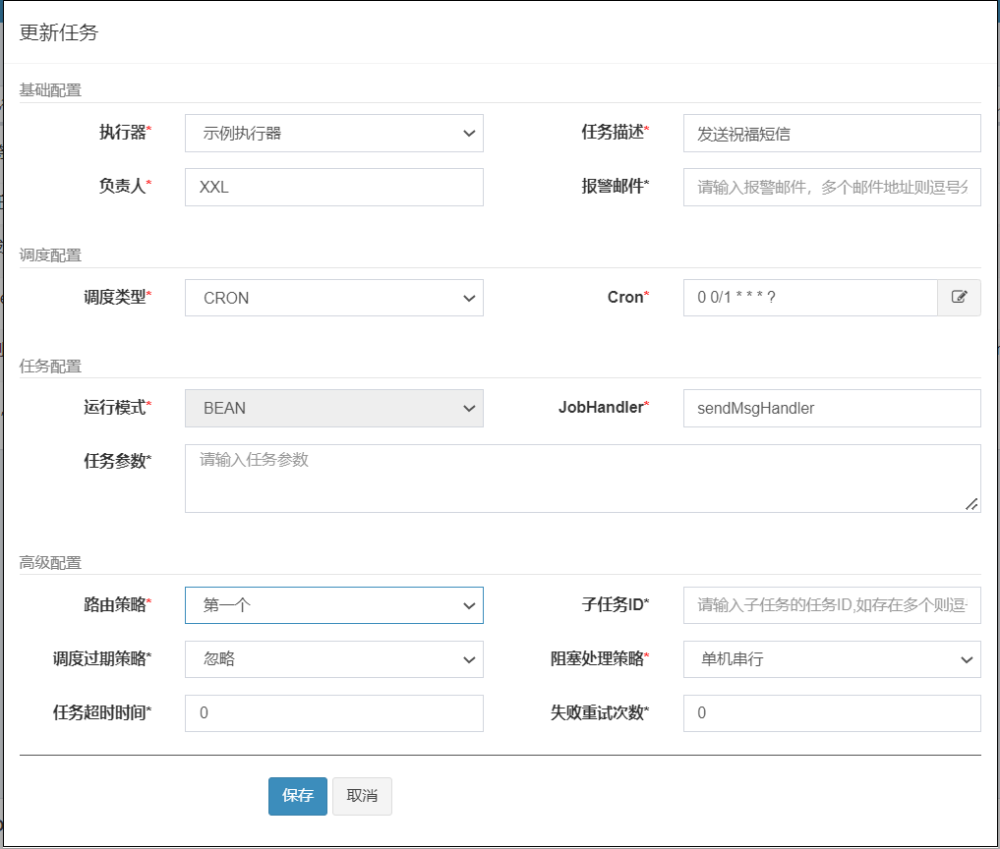
3.2 分片概念讲解
比如我们的案例中有2000+条数据，如果不采取分片形式的话，任务只会在一台机器上执行，这样的话需要20+秒才能执行完任务.
如果采取分片广播的形式的话，一次任务调度将会广播触发对应集群中所有执行器执行一次任务，同时系统自动传递分片参数；可根据分片参数开发分片任务；
获取分片参数方式:
// 可参考Sample示例执行器中的示例任务"ShardingJobHandler"了解试用
int shardIndex = XxlJobHelper.getShardIndex();
int shardTotal = XxlJobHelper.getShardTotal();通过这两个参数，我们可以通过求模取余的方式，分别查询，分别执行，这样的话就可以提高处理的速度.
之前2000+条数据只在一台机器上执行需要20+秒才能完成任务，分片后，有两台机器可以共同完成2000+条数据，每台机器处理1000+条数据，这样的话只需要10+秒就能完成任务
3.3 案例改造成任务分片
Mapper增加查询方法
@Mapper
public interface UserMobilePlanMapper {
@Select("select * from t_user_mobile_plan where mod(id,#{shardingTotal})=#{shardingIndex}")
List<UserMobilePlan> selectByMod(@Param("shardingIndex") Integer shardingIndex,@Param("shardingTotal")Integer shardingTotal); // 求模
@Select("select * from t_user_mobile_plan")
List<UserMobilePlan> selectAll();
}任务类方法
@XxlJob("sendMsgShardingHandler")
public void sendMsgShardingHandler() throws Exception{
System.out.println("任务开始时间:"+new Date());
int shardTotal = XxlJobHelper.getShardTotal();
int shardIndex = XxlJobHelper.getShardIndex();
List<UserMobilePlan> userMobilePlans = null;
if(shardTotal==1){
//如果没有分片就直接查询所有数据
userMobilePlans = userMobilePlanMapper.selectAll();
}else{
userMobilePlans = userMobilePlanMapper.selectByMod(shardIndex,shardTotal);
}
System.out.println("处理任务数量:"+userMobilePlans.size());
Long startTime = System.currentTimeMillis();
userMobilePlans.forEach(item->{
try {
TimeUnit.MILLISECONDS.sleep(10);
} catch (InterruptedException e) {
e.printStackTrace();
}
});
System.out.println("任务结束时间:"+new Date());
System.out.println("任务耗时:"+(System.currentTimeMillis()-startTime)+"毫秒");
}任务设置
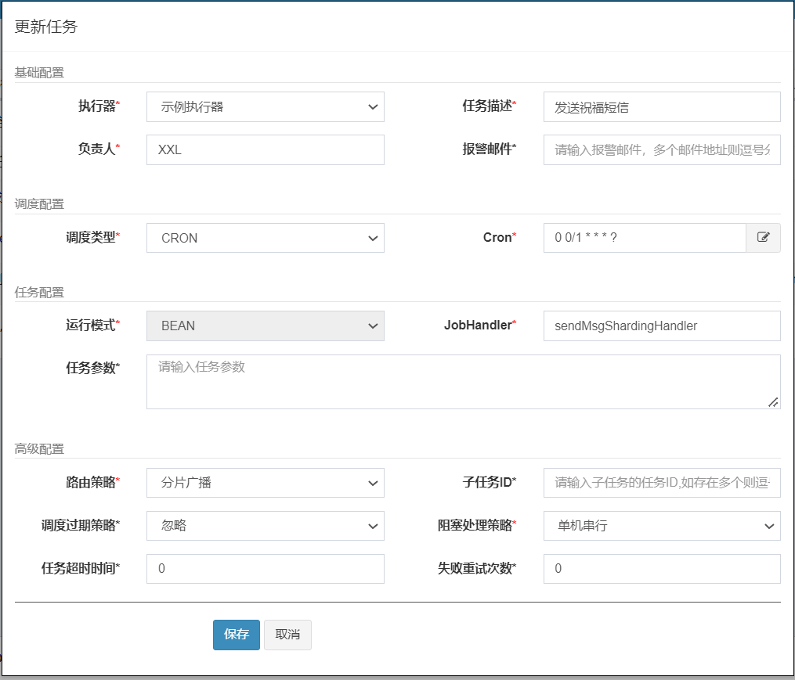